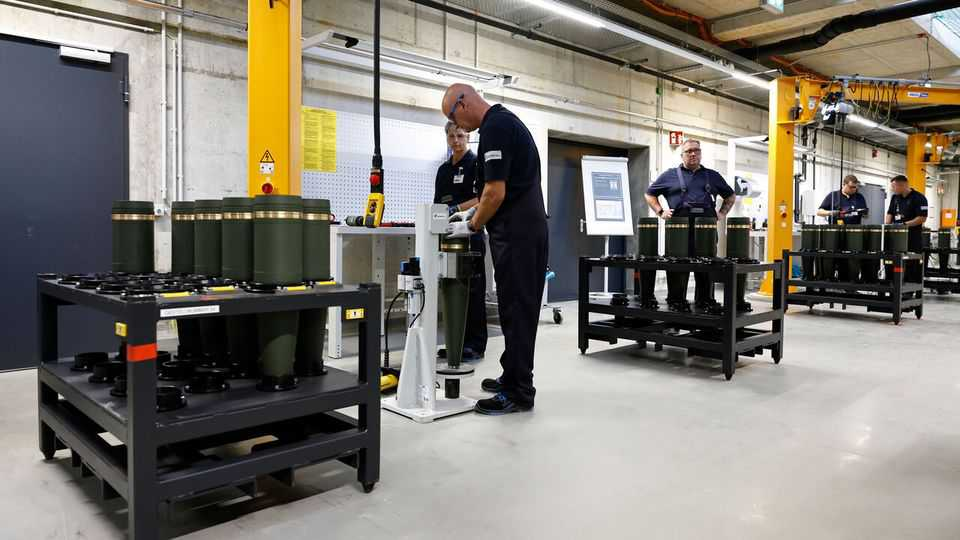
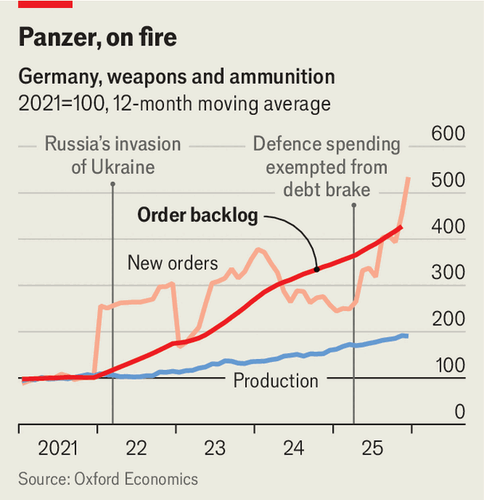

Europe | SAMs tomorrow

For some time, Germany’s economic recovery has been just around the corner. Rosy-ish forecasts have succumbed to repeated headwinds, from pricey energy to Donald Trump’s tariffs to Chinese dumping. Last month the government led by Friedrich Merz, the chancellor, downgraded its growth forecast for 2026 from 1.3% to 1%. Ambitious reform pledges have given way to low-grade rows within the coalition over dental insurance and inheritance tax. Just nine months into the government’s term, a sense of drift has set in. Firms are fed up. “Euphoria [at Mr Merz’s election] has given way to sheer horror at the development of Germany,” was the recent verdict of one business chief.
That may be excessive. But some certainly hoped for a speedier rebound, given the extraordinary fiscal stimulus on which Germany has embarked. Last March, at Mr Merz’s instigation, the Bundestag approved a €500bn ($595bn) debt-financed fund for climate and infrastructure, and excluded most defence spending from the constitutional “debt brake”, which caps deficits. Promising to build Europe’s “strongest conventional army”, Mr Merz laid out a plan to reach the nato goal of devoting 3.5% of gdp to defence by 2029, six years earlier than required. Last year the country once known as Europe’s austerity champion ran a deficit worth 2.4% of gdp; it will yawn yet wider in the years ahead. Overall defence spending has risen from €47bn in 2021 to a projected €108bn this year, or 2.8% of GDP.
German rearmament began in 2022, after Russia invaded Ukraine and Olaf Scholz, then chancellor, declared a Zeitenwende (turning-point) in security policy. Mr Merz accelerated the ramp-up. For all the gloom, his government’s largesse has inspired signs of recovery. Last year the economy eked out growth of 0.2%, after years of stagnation or worse. Two-thirds of this year’s projected growth is credited to fiscal policy. Manufacturing orders have begun to boom, probably owing largely to outlays on weapons and ammunition. Spending on big-ticket items such as armoured vehicles, air defence and space technology will help further. “We need to wait for more numbers to know whether this is a flickering light or something more,” says Johannes Binder at the Kiel Institute for the World Economy. “But there is reason to be optimistic.”

The biggest question is how fast Germany can convert those orders into production. Its armsmakers have done a decent job responding to increased demand, argues Oliver Rakau at Oxford Economics, a consultancy, but have not moved fast enough to avoid huge backlogs (see chart). Bottlenecks in facilities and labour supply, as well as red tape, are a scourge across the economy; defence is no exception. Some firms complain it takes too long to gain security clearance for the workers they hire. Still, Carsten Brzeski, a Germany-watcher at ing, a bank, regards Germany as a “ketchup-bottle” economy: shake it for ages and nothing happens, until suddenly it all comes out.
Can this state-driven rebound inspire broader recovery? Orders are one thing, but overall manufacturing output remains stagnant, having fallen by 15% since its peak in 2018. The traditional industrial workhorses of cars and chemicals are underpowered. Germany is shedding around 14,000 manufacturing workers a month. The defence and infrastructure splurge should have downstream effects on other parts of the economy. Some laid-off workers, or idle car plants, might be redeployed to produce arms and munitions. But not everyone in the auto industry can hope for a defence job, says Mr Brzeski.
Still, smartly targeted spending will in time drive innovation across the whole economy, notes Constantin Häfner, a board member of the Fraunhofer Society, an applied-research institute, “especially as the gap between defence and civilian tech disappears”. A big chunk of Germany’s defence spending will go to established firms like Rheinmetall. But encouraging, for example, the lattice of startups in and around Munich working on drones, robotics and ai-enabled defence tech could have substantial spillover effects. Mr Binder says Germany should set a benchmark for the share of defence spending devoted to research and development.
For now, though, a gloomy Germany eagerly awaits its long-delayed recovery. Thanks to the difficulties in turning orders into output, Mr Rakau thinks growth this year will prove to be even slower than the government predicts, at just 0.8%. But it will pick up speed as the German machine judders into gear in the second half of 2026, and accelerate further next year. Not quite around the corner, but not far off. ■
To stay on top of the biggest European stories, sign up to Café Europa, our weekly subscriber-only newsletter.